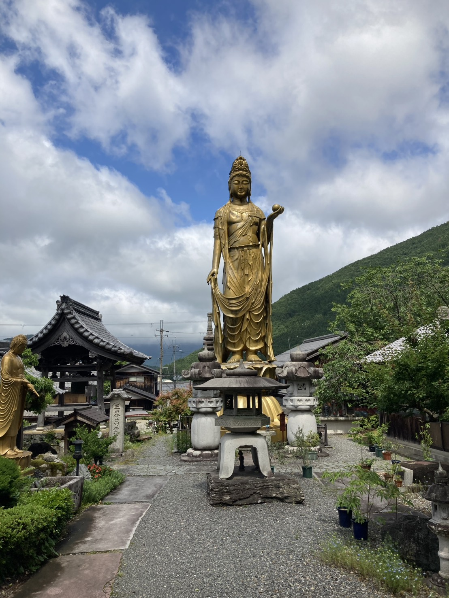

A temple in Takashima, Shiga
Chozenji Temple
Information about zazen experience, memorial services,
memorial graves, access, and inquiries at Chozenji Temple.
About Chozenji

Chozenji is a local Buddhist temple located in Takashima City, Shiga Prefecture.
The temple receives inquiries about memorial services and Buddhist rituals for local families, while also gradually offering zazen experiences and other ways for visitors to become familiar with the temple.
Chozenji is not a large tourist temple. Rather, it is a place where local people and visitors can connect through consultation, Buddhist services, and quiet experiences in the temple space.
The Grounds of Chozenji
A Kannon statue stands within the temple grounds and quietly welcomes visitors.
Chozenji is a place for memorial services and Buddhist rituals, and also a place where visitors can experience the atmosphere of a local temple through zazen and visits.
For your first visit, please check the Access page for the location and parking information.

Information
Zazen Experience
Zazen experiences are available by inquiry for first-time visitors, international guests, and small groups.
Learn more →Memorial Services
Please contact us if you would like to ask about Buddhist memorial services, annual memorial rites, Obon, Higan, or services after a funeral.
Learn more →Memorial Grave
Consultation is available for those who are concerned about future grave care, family succession, or long-term memorial arrangements.
Learn more →Access
Find the address, Google Map, parking information, and basic information for visiting Chozenji Temple.
Learn more →For First-Time Visitors
- If you found Chozenji through Google Maps or a travel / experience site, please start with the Zazen Experience page.
- If you would like to ask about Buddhist memorial services, please see the Memorial Services page.
- If you would like to ask about graves or future memorial arrangements, please see the Memorial Grave page.
- If you would like to check the location or parking information, please see the Access page.
- Information about zazen experience in English is available on the English zazen page.
Contact
For inquiries about zazen experience, memorial services, memorial graves, visits, or other matters related to Chozenji Temple, please contact us through the inquiry form.
It is fine if the details are not yet fully decided. Please write what you know at this stage.